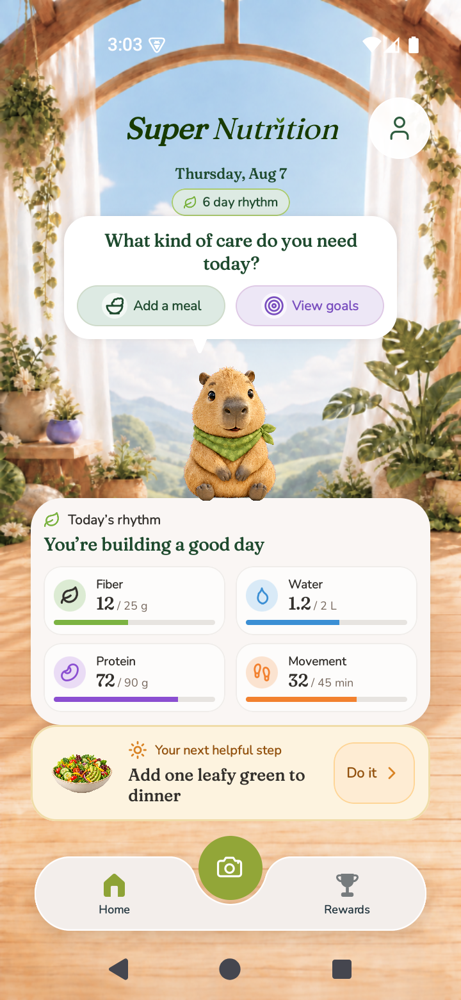
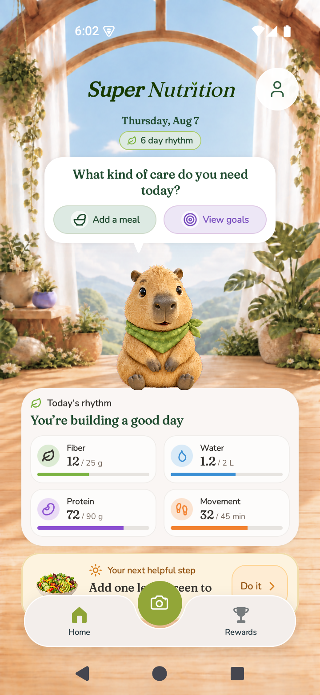

100% текста
Помещается без прокрутки
- Запрошено
- 360 × 780 dp · портрет
- Фактически
- 360 × 780 dp · портрет
- PNG / плотность
- 720 × 1560 px · 320 dpi
- Системный текст
- 1×; запрос 1×
- Размещение Home (XML)
- критерий пройден
- До навигации
- 11.5 dp; минимум 8 dp
- Между нижними карточками
- 0 dp
Прокрутка в native XML: нет.
Оригинальный PNG · Метаданные · Native XML
Источник, хеши и наблюдение
SHA-256 PNG: 0eadcf3466cd751c8c1e976e08ac92c208d791e34e81d03974b081304c9a2f72
SHA-256 APK: 7f7296bd7282a86dc63fe4feaad0d4a19706c8b4ca231c39607ff0e3abc1f26c
Снято: 2026-10-18T00:03:26.516234+00:00
Просмотрено: 2026-10-18T00:05:02.361387+00:00
Исходная запись визуального просмотра: Full Home visible: date, care actions, overlapping mascot, four metrics and helpful card all clear navigation; text readable at original size.
До изменений — исходный кадр
SuperNutrition_API_35_x86_64 · 100%
Нужен дизайнер
- Запрошено
- 360 × 780 dp · портрет
- Фактически
- 360 × 780 dp · портрет
- PNG / плотность
- 720 × 1560 px · 320 dpi
- Системный текст
- 1×; запрос 1×
- Размещение Home (XML)
- критерий не пройден
Остановить уплотнение: нужна другая композиция. Сохранить читаемый текст и все действия.
Прокрутка в native XML: есть.
Оригинальный PNG · Метаданные · Native XML
Источник, хеши и наблюдение
SHA-256 PNG: 99d09315f4fd40b1c2de04ce93bb70aff5515ce334c2c8a06ff05eebacca711d
SHA-256 APK: 8a0036005de47648ff26871304a5e821606af1eb0e20790204d399e48c707e41
Снято: 2026-10-17T15:02:39.568621+00:00
Просмотрено: 2026-10-18T05:58:22.729488+00:00
Исходная запись визуального просмотра: Before360x780 at100%: navigation obscures helpful-step copy and action lower edge. Full readable initial Home does not fit; compare final measured arrangement.